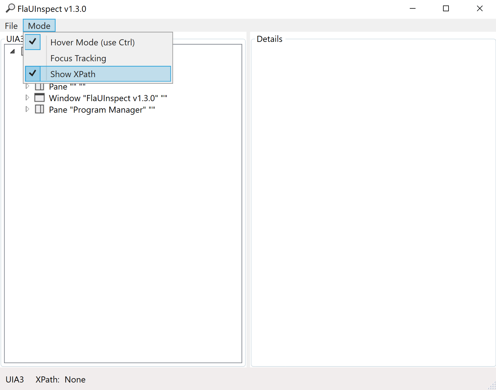
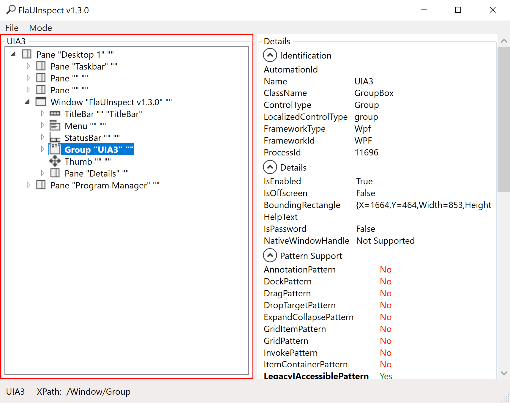

Interact with a GUI Application via Robot Framework
This guide shows how to write a Robot Framework script which interacts with an external application.
Example: Interacting with an application via a GUI
Consider an external system that is accessible through a GUI program, and that does not offer an API. In this situation, we can either interact manually with the external system , or with a Robot Framework connection.
Prerequisites
This guide will focus only on how to interact with a GUI application. The guide on how to write a Robot Framework script explains the basics of Robot Framework. The basic prerequisites can be found on the Robot Framework connector page. See the Write a Robot Framework Script and Robot Framework topics for additional information.
The requirements specific to the Robot Framework FlaUI library are as follows:
- Python 3.7 or 3.8. For Python 3.9, using
pip install wheelin the command prompt may solve installation errors. - Robot Framework FlaUI library: use
pip install --upgrade robotframework-flauiin the command prompt. - The application with the GUI.
Other Robot Framework libraries can interact with applications. The [desktop part of the zoomba library] can also interact with a program, but requires an appium server.
While not strictly required, it is highly recommended that the Robot Framework FlaUI library documentation be consulted.
Inspecting tools
Most FlaUI keywords require an XPath locator. These XPaths can be found using the FlaUI inspection tool. Download the FlaUI inspection tool zip archive, then extract the files to a folder. The inspection tool can be launched simply by running FlaUIInspect.exe.
This tool lets you choose the UIA (UI Automation) version. Picking UIA3 should work in most use cases.
The FlaUI inspection tool shows each window that is open on the computer. To find the element the script is supposed to interact with, it is possible to manually search through the windows, and through the elements. However, the easiest way is to use the Hover Mode, which is accessible in the tool bar by clicking on Mode > Hover Mode (use Ctrl). To see the XPath, click on Mode > Show XPath.

To see the XPath of an element, hover over the element, and press control. A red box should appear around the element, and the FlaUI inspection tool should show the element's information. The XPath should be at the bottom left of the FlaUI element.

As an example, imagine an application showing a list of files and folders. Targeting a specific file would produce an XPath in the shape of /Window/Pane[3]/Pane/Pane[2]/List/Group[1]/ListItem[1]. The important parts of this path are the beginning and the end. The beginning of the XPath specifies the window. The middle part of the XPath, in most cases, is irrelevant.
The last part of the XPath however, /Group[1]/ListItem[1], is what should be modified to find the right file. Group[1] means the element is in the first file group. ListItem[1] means the element is the first file of the group. Depending on the file explorer view mode, the XPath may end with Edit[1], which means the targeted element is the name section of the file.
As the Window's number may change, it should be specified by name. For the Downloads folder, Window[@Name='Downloads'] specifies the window. The file may not always be at the same position, so it should also be specified. If the file is FlaUInspect.exe, it can be specified with ListItem[@Name='FlaUInspect.exe']. The Group may also change. It is not easy to find the right group, so the best method is to remove the groups, by right clicking, then selecting Group by > (None).
Use Case: Set a file to read-only
Consider an HR system that creates a file for each employee. When an employee retires, it may be interesting to set the file to read-only, so that it is not modified by accident. It is possible to set the file to read-only by provisioning it with the Robot Framework.
Define settings
As with every other Robot Framework script, the Identity Manager Robot Framework resource needs to be imported to launch the provisioning. The FlaUI library also needs to be imported to use its keywords.
*** Settings ***
Resource C:/UsercubeDemo/Runtime/UsercubeRobotFramework.resource
Library FlaUILibrary
Define variables
The Variables section contains variables that are used in the rest of the script. As the section is at the start of the script, the variables are easy to update. In this case, the folder's name and path are important variables that may be changed.
*** Variables ***
${FOLDERNAME} RobotFrameworkIdentity
${FOLDERPATH} C:/UsercubeDemo/${FOLDERNAME}
Define custom keywords
To modify a file's properties, the script needs custom keywords that allow the desired actions to be accomplished. In this case, to navigate through the explorer program. These keywords were written with the Windows 10 File Explorer in mind.
|
Keyword |
Details |
|---|---|
|
Open Explorer |
Opens and attaches the explorer program to FlaUI. A program can be attached to FlaUI by its name or by its |
|
Open Folder |
Opens the folder specified in the |
|
Get File Name |
Returns the file's name. This allows the computation of the file's name through a keyword instead of an expression, which can make syntax easier. |
|
Set File To Read Only |
Sets the file corresponding to the user to read only. This keyword calls the other keywords in the right order, and is used to simplify the readability of the script. |
|
Open File Properties |
Right clicks on a file, then opens the file's properties. The right click is on the file's image, but it could be changed to any of the file's fields. Note that changing the folder's view mode or ordering may alter the file's XPath. |
|
Select Read Only |
Selects the read only option. This keyword simply clicks on the radio button, then clicks on the |
|
Close Explorer |
Clicks on the cross to close the explorer window. It is also possible to close the program with the |
Open Explorer
Launch Application explorer
Attach Application By Name explorer
Open Folder
Open Folder
Click /Window[@Name='File Explorer']/Pane[2]/Pane[3]/ProgressBar/Pane/ToolBar/SplitButton
Set Text To Textbox /Window[@Name='File Explorer']/Pane[2]/Pane[3]/ProgressBar/ComboBox/Edit[@Name='Address'] ${FOLDERPATH}
Press Key s'ENTER'
Get File Name
[Arguments] ${order}
[return] ${order['Changes']['Identifier']}.txt
Set File To Read Only
[Arguments] ${order}
${FileName}= Get File Name ${order}
Open File Properties ${FileName}
Select ReadOnly ${FileName}
Open File Properties
[Arguments] ${filename}
Right Click /Window[@Name='${FOLDERNAME}']/Pane[3]/Pane/Pane[2]/List/ListItem[@Name='${filename}']/Image
Click /Menu[@Name='Context']/MenuItem[@Name='Properties']
Select Read Only
[Arguments] ${filename}
Click /Window[@Name='${filename} Properties']/CheckBox[@Name='Read-only']
Click /Window[@Name='${filename} Properties']/Button[@Name='OK']
Close Explorer
Click /Window[@Name='${FOLDERNAME}']/TitleBar/Button[@Name='Close']
Define mandatory keywords
To provision the system, the script must contain the three mandatory keywords: ExecuteAdd, ExecuteDelete, and ExecuteModify. In this case, only ExecuteDelete is implemented. (It is considered, perhaps foolishly, that employees will not come out of retirement!)
*** Keywords ***
ExecuteAdd
[Arguments] ${order}
Log To Console ExecuteAdd is not implemented
ExecuteDelete
[Arguments] ${order}
Set File To Read Only ${order}
ExecuteModify
[Arguments] ${order}
Log To Console ExecuteModify is not implemented
Define test cases
Although the Robot Framework is used for provisioning in Identity Manager, it is most often used for testing, which is why the Test Cases section defines what should happen when Identity Manager starts the Robot Framework task. The Launch Provisioning keyword is the one that will fetch the provisioning orders.
*** Test Cases ***
Run Provisioning
Open Explorer
Launch Provisioning
Close Explorer
Read the full script
The full script is as follows:
*** Settings ***
Resource C:/UsercubeDemo/Runtime/UsercubeRobotFramework.resource
Library FlaUILibrary
*** Variables ***
${FOLDERNAME} RobotFrameworkIdentity
${FOLDERPATH} C:/UsercubeDemo/${FOLDERNAME}
*** Keywords ***
ExecuteAdd
[Arguments] ${order}
Log To Console ExecuteAdd is not implemented
ExecuteDelete
[Arguments] ${order}
Set File To Read Only ${order}
ExecuteModify
[Arguments] ${order}
Log To Console ExecuteModify is not implemented
Open Explorer
Launch Application explorer
Attach Application By Name explorer
Open Folder
Open Folder
Click /Window[@Name='File Explorer']/Pane[2]/Pane[3]/ProgressBar/Pane/ToolBar/SplitButton
Set Text To Textbox /Window[@Name='File Explorer']/Pane[2]/Pane[3]/ProgressBar/ComboBox/Edit[@Name='Address'] ${FOLDERPATH}
Press Key s'ENTER'
Get File Name
[Arguments] ${order}
[return] ${order['Changes']['Identifier']}.txt
Set File To Read Only
[Arguments] ${order}
${FileName}= Get File Name ${order}
Open File Properties ${FileName}
Select ReadOnly ${FileName}
Open File Properties
[Arguments] ${filename}
Right Click /Window[@Name='${FOLDERNAME}']/Pane[3]/Pane/Pane[2]/List/ListItem[@Name='${filename}']/Image
Click /Menu[@Name='Context']/MenuItem[@Name='Properties']
Select Read Only
[Arguments] ${filename}
Click /Window[@Name='${filename} Properties']/CheckBox[@Name='Read-only']
Click /Window[@Name='${filename} Properties']/Button[@Name='OK']
Close Explorer
Click /Window[@Name='${FOLDERNAME}']/TitleBar/Button[@Name='Close']
*** Test Cases ***
Run Provisioning
Open Explorer
Launch Provisioning
Close Explorer